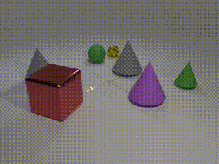
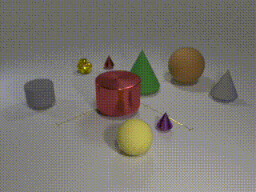
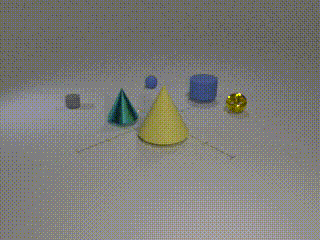
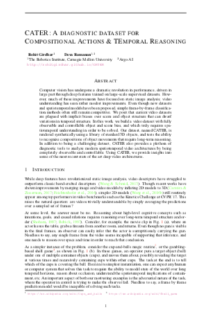

CATER: A diagnostic dataset for
Compositional Actions and TEmporal Reasoning
| Human (and apparently even cats!) are able to solve long temporal reasoning tasks like locating the ball as the cups are shuffled. Can we design similarly hard tasks for computers? |
|    |
| Computer vision has undergone a dramatic revolution in performance, driven in large part through deep features trained on large-scale supervised datasets. However, much of these improvements have focused on static image analysis; video understanding has seen rather modest improvements. Even though new datasets and spatiotemporal models have been proposed, simple frame-by-frame classification methods often still remain competitive. We posit that current video datasets are plagued with implicit biases over scene and object structure that can dwarf variations in temporal structure. In this work, we build a video dataset with fully observable and controllable object and scene bias, and which truly requires spatiotemporal understanding in order to be solved. Our dataset, named CATER, is rendered synthetically using a library of standard 3D objects, and tests the ability to recognize compositions of object movements that require long-term reasoning. As an illustrative example, consider the "cups and ball" shell game, where a target object (ball) is adversarially passed between container objects (cups) so as to deceive an observer as to its final position. Solving this task requires reasoning about recursive container relations and long-term occlusions. In addition to being a challenging dataset, CATER also provides a plethora of diagnostic tools to analyze modern spatiotemporal video architectures by being completely observable and controllable. Using CATER, we provide insights into some of the most recent state of the art deep video architectures. |
People
|
Rohit Girdhar |
Deva Ramanan |
Paper
|  |
R. Girdhar and D. Ramanan CATER: A diagnostic dataset for Compositional Actions and TEmporal Reasoning arXiv 2019 [arXiv] [Code] [Supplementary video] [BibTex] |
Acknowledgements
Authors would like to thank Ishan Misra for many helpful discussions and help with systems. This research is based upon work supported in part by NSF Grant 1618903.